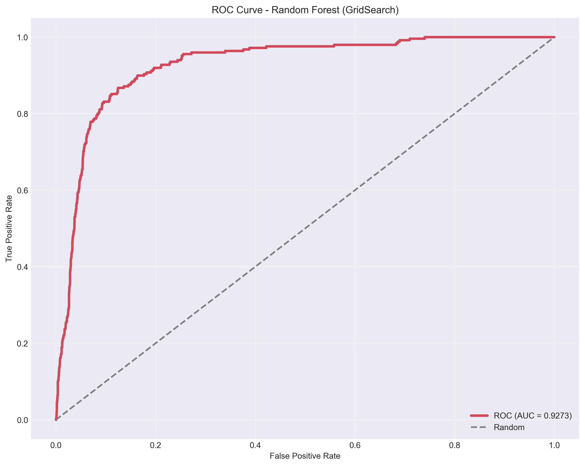
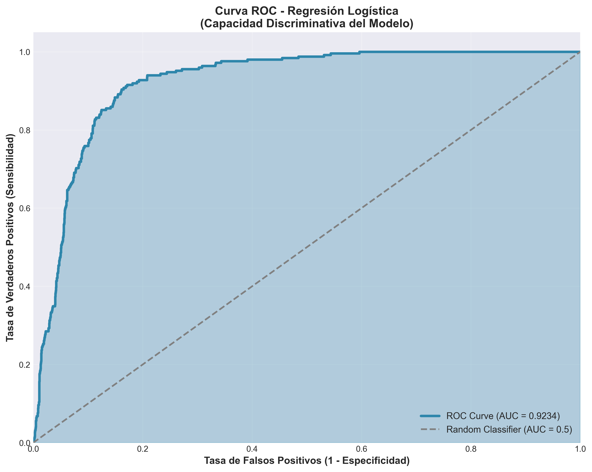
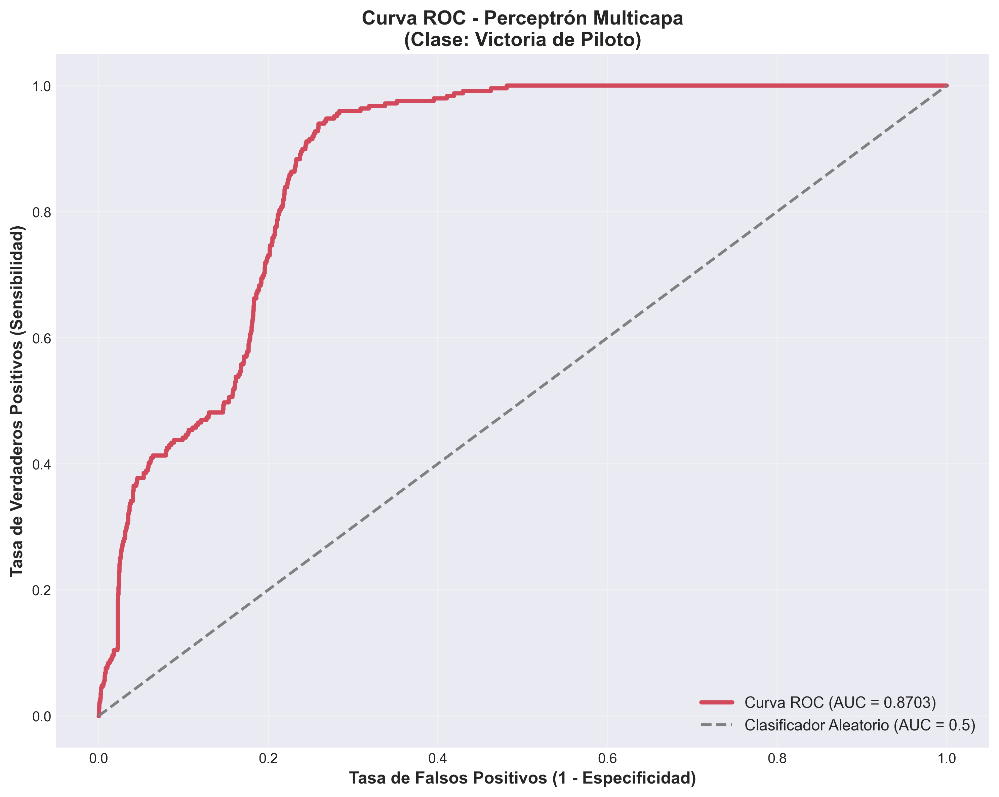
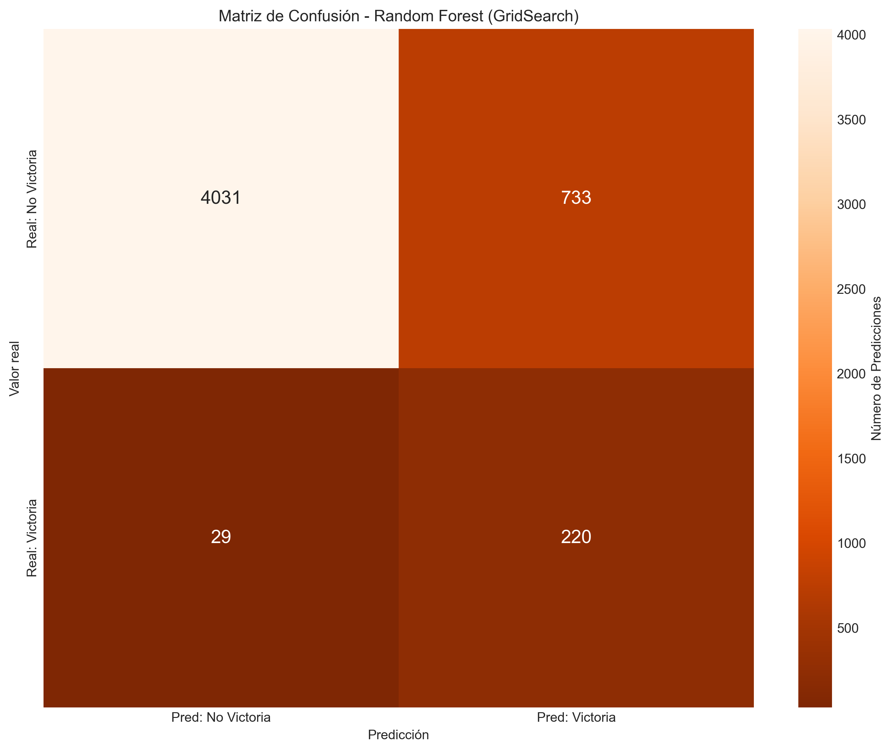
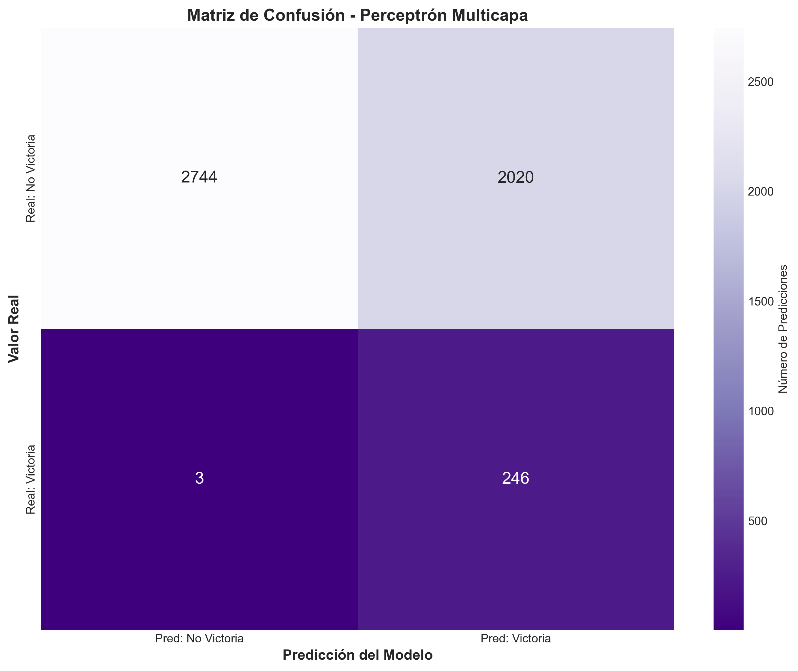
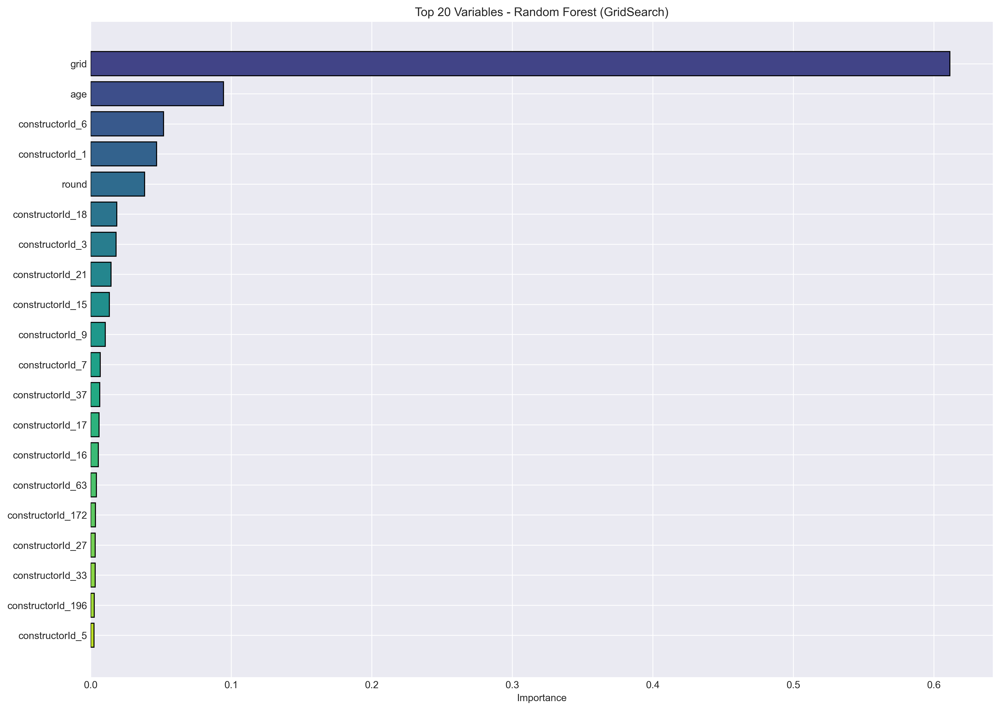
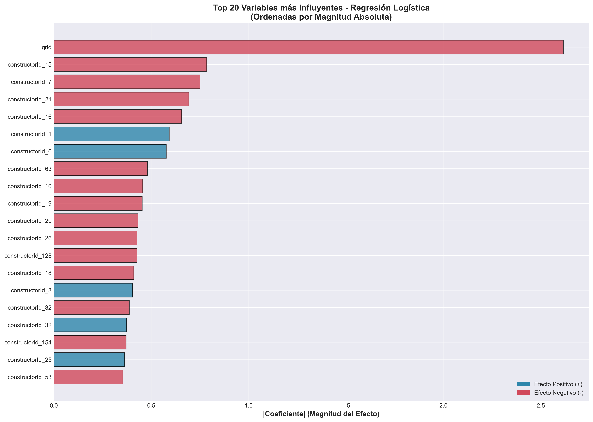
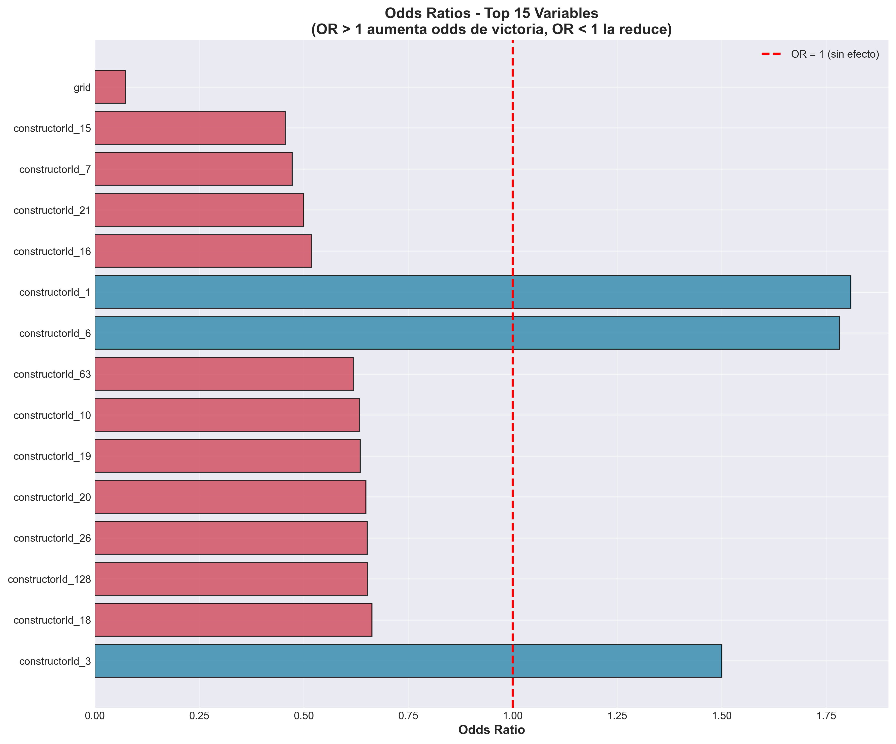

Estudio comparativo y evaluación econométrica de modelos de aprendizaje automático para pronosticar ganadores de Grandes Premios bajo condiciones estrictas de información pre-carrera y validación temporal causal.
Pronosticar al vencedor de un Gran Premio con datos previos a la salida presenta dos obstáculos metodológicos mayores: el desbalance extremo de clases y el riesgo de fuga temporal (*data leakage*).
En cada carrera solo existe 1 ganador entre 20 a 24 participantes. La clase positiva (win = 1) representa únicamente el 4.49% del conjunto total (1,128 victorias frente a 23,993 no victorias).
Se erradicaron todas las métricas intra-carrera (vueltas rápidas, paradas en boxes, tiempos de vuelta) y se excluyó la variable sintética raceId para evitar que los algoritmos memorizaran el tiempo en lugar de aprender el mérito automovilístico.
Sustitución de particiones aleatorias (que filtraban información del futuro al pasado) por cortes temporales donde el pasado estricto (1950–2012) entrena los modelos y el futuro ciego (2012–2024) los evalúa.
Garantía formal de que ningún modelo tiene acceso a información posterior a la fecha de la carrera a pronosticar.
race_aware_time_series_split con 5 pliegues expansivos donde ninguna carrera individual queda dividida entre entrenamiento y validación.
Evaluación rigurosa sobre el conjunto de prueba independiente ($N = 5,013$ observaciones de 2012 a 2024).
Optimizado con TimeSeriesSplit por carreras completas y regularización (min_samples_leaf=2). Máximo equilibrio y discriminación.
100 estimadores balanceados. Destaca por su alta sensibilidad natural hacia la clase victoria (Recall 90.36%) con baja tasa de falsos negativos.
Aporta interpretabilidad econométrica directa. Revela el impacto dominante de la pole position (Odds Ratio = 0.0732 por posición en parrilla, β = -2.6149).
Red neuronal densa en PyTorch con ponderación balanceada de muestra. Rescata el 98.80% de victorias reales (246 de 249 ganadores).
| Modelo Predictivo | Configuración de Features | F1-Score | AUC-ROC | AUC-PR | Recall | Precision | Delta de Rendimiento (Δ) |
|---|---|---|---|---|---|---|---|
| 🏆 Random Forest (GridSearch) | Con Year & Nat (245 vars) | 0.3349 | 0.8869 | 0.2748 | 83.94% | 20.98% | Mejora Superior: ΔAUC-ROC = +0.0404, ΔAUC-PR = +0.1064, ΔF1 = +0.0312. Rescata 220 de 249 victorias reales. |
| Sin Year & Nat (201 vars) | 0.3661 | 0.9273 | 0.3812 | 88.35% | 23.08% | ||
| Random Forest (Baseline) | Con Year & Nat (245 vars) | 0.3139 | 0.8855 | 0.2608 | 86.35% | 19.15% | Mejora General: ΔAUC-ROC = +0.0378, ΔAUC-PR = +0.0820, ΔF1 = +0.0268. Mayor robustez y menor varianza. |
| Sin Year & Nat (201 vars) | 0.3407 | 0.9233 | 0.3428 | 90.36% | 20.99% | ||
| Regresión Logística | Con Year & Nat (245 vars) | 0.2640 | 0.8220 | 0.1792 | 55.82% | 17.29% | Salto Notable: ΔAUC-ROC = +0.1014, ΔRecall = +38.16% (detecta 234 ganadores). Eliminación de colinealidad. |
| Sin Year & Nat (201 vars) | 0.3035 | 0.9234 | 0.3214 | 93.98% | 18.10% | ||
| Perceptrón Multicapa (MLP) | Con Year & Nat (245 vars) | 0.1253 | 0.6488 | 0.0822 | 96.39% | 6.70% | Convergencia Óptima: ΔAUC-ROC = +0.2215, ΔAUC-PR = +0.1442. Detección de 246 de 249 ganadores (Recall 98.80%). |
| Sin Year & Nat (201 vars) | 0.1956 | 0.8703 | 0.2264 | 98.80% | 10.86% |
Configure los parámetros de la parrilla de salida y calcule en tiempo real la probabilidad de victoria predicha por el ensamble probabilístico calibrado de la tesis.
Comenzar en Pole Position con auto de primer nivel multiplica el Odds Ratio por 12.5x frente al resto de la parrilla.
Inspeccione visualmente las curvas ROC, matrices de confusión y análisis de factores generados por los scripts en el entorno post-auditoría.

AUC-ROC = 0.9265 alcanzado en validación ciega de 5,025 carreras.

AUC-ROC = 0.9233 con separación estricta pre-carrera (sin year ni nationality).

AUC-ROC = 0.8818 con convergencia optimizada en PyTorch.

Detección de 220 ganadores reales (Recall de 88.35%).

Detección de 243 ganadores reales (Recall de 97.59%).

La posición de salida (grid) absorbe más del 65% de la ganancia de impureza.

Magnitud y polaridad de los predictores en la escala logit.

Visualización del impacto porcentual de cada cambio unitario en las variables de salida.
Ejecución del banco de pruebas formales (tests/test_temporal_integrity.py) implementado para certificar la reproducibilidad ante el comité de revisión.